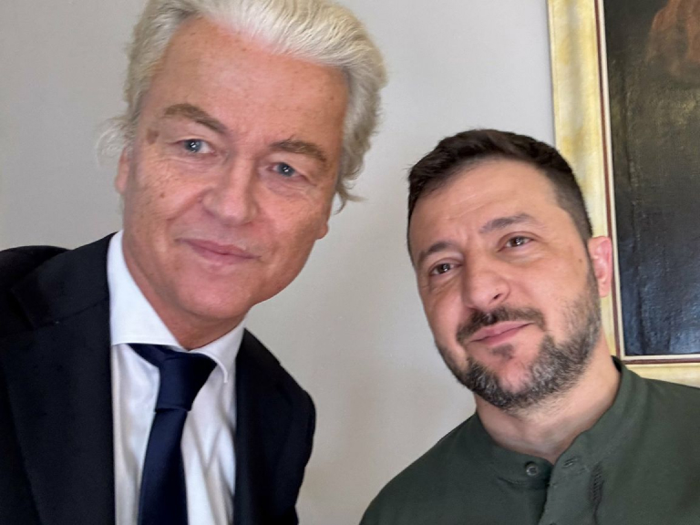
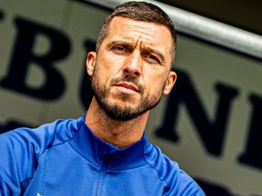

Rijksmuseum gesloten vanwege blokkade Extinction Rebellion

-
Wilders ontmoet Zalensky: 'Corruptie besproken'

-
Gijzelaars belangrijker dan controle over corridor, zegt oud-veiligheidschef Israël

-
Een kunstenaar als Medunjanin heeft Oranje-opponent Bosnië niet meer

-
Met de Russische invasie in Oekraïne brak ook een cultuuroorlog uit

-
Honderden evacuaties vanwege bosbrand op berg in Duitsland

-
IJsvorming mogelijk oorzaak vliegtuigongeluk Brazilië

-
Loodzware voorlaatste Vuelta-rit met zeven bergen • Roglic gestart in rode trui

Articles
-
Plat doet op vierde Spelen ook mee aan marathon: 'Was op zoek naar nieuwe prikkel'

-
Regisseur Pim de la Parra (Blue Movie, Wan Pipel) overleden

-
Oud-vicepresident Cheney stemt niet op partijgenoot Trump: 'Grote bedreiging'